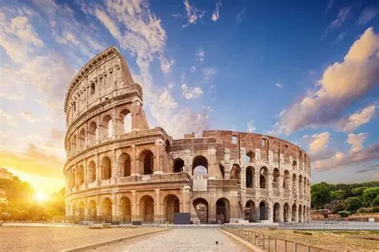

Колизей

Колизей, или амфитеатр Флавиев, является одним из самых грандиозных сооружений Древнего Рима, сохранившегося до наших дней. Он был построен на средства, полученные от разграбления Иудейского храма, и стал символом Рима и Вечного города. Строительство амфитеатра началось в 72 году н.э. при императоре Веспасиане и завершилось в 80 году н.э. при императоре Тите. Внутри амфитеатра размещались 50 тысяч зрителей, и он стал местом для гладиаторских и зверских боев. Колизей также стал местом для производства селитры и в XIII веке использовался как каменоломня. В наши дни амфитеатр продолжает привлекать миллионы туристов и является важным объектом Всемирного наследия ЮНЕСКО.